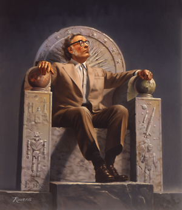

Grandes divulgadores da ciência .
Os cientistas sempre precisaram de tradutores. Nos velhos tempos, isso costumava significar de uma língua
para outra, como quando os textos da ciência grega antiga eram transcritos para versões latinas ou
árabes. Mas mesmo assim o problema existia de simplesmente comunicar as complexidades da ciência aos
não-cientistas interessados. Enfrentar essa necessidade exigia uma habilidade para reformular o jargão e
a profundidade matizada de especialistas em uma versão acessível ao público alfabetizado em geral.
Muitos cientistas ao longo dos séculos, juntamente com alguns escritores não-cientistas, assumiram este
desafio e se destacaram. Hoje, sem dúvidas, mais pessoas popularizam a ciência, mas ninguém como esses
divulgadores da ciência de todos os tempos.
Carl Sagan
Famoso pela série de TV Cosmos, Sagan escreveu
vários livros populares e elegantes, defendendo o espírito
científico como um antídoto para os fornecedores de superstição
e irracionalidade.

Isaac Asimov
Mais conhecido por suas obras de ficção científica, Asimov era ainda mais prolífico como escritor de
não-ficção científica, produzindo livros após livros que abrangem quase todos os campos da ciência,
incluindo um dicionário biográfico, uma cronologia dos eventos científicos, desde os tempos antigos
até o presente.
Richard Dawkins
Richard Dawkins possui onze livros publicados. Alguns aspectos são bastante evidentes em suas obras.
Dawkins é um biólogo evolutivo, defensor da Teoria da Evolução de Charles Darwin, um crítico do
criacionismo e ateu convicto.